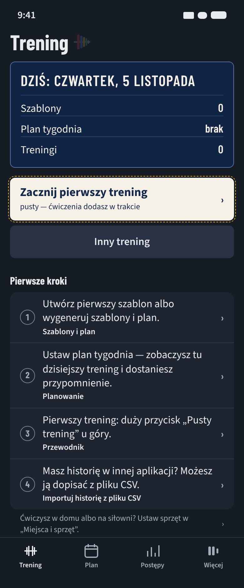
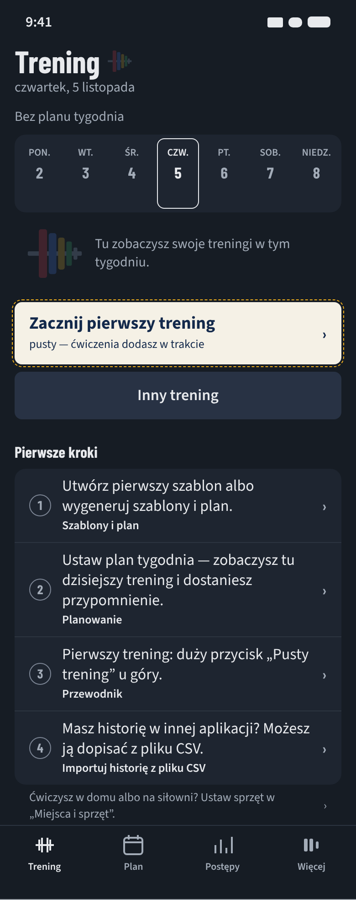
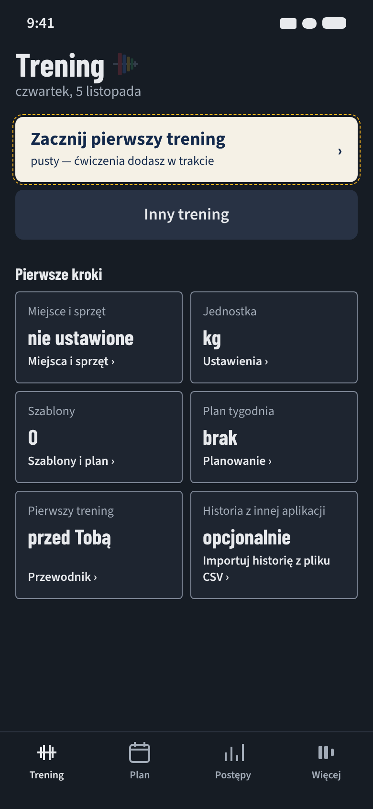

Ten sam ekran (nowa osoba, bez szablonu, motyw ciemny — domyślny dla nowej instalacji, 390 pt) w trzech kierunkach i dziś. Wszystkie zostają w obecnym systemie: te same kolory, krój Barlow Condensed, tablica i motyw talerzy. Różnią się tym, jaki element aplikacji nowa osoba widzi od pierwszej sekundy i jakie prawdziwe dane on niesie. Przycisk w żółtej przerywanej ramce = proponowany nowy tekst (opcja Z-2), nie część kierunku.
dziśObecny ekran

Co widać: „Pusty trening”, „Inny trening” i karta czterech kroków z czterema przyciskami.
Słabość: nic z tożsamości aplikacji poza małą ikonką; najcięższa rzecz to lista zadań, a krok 1 sugeruje, że bez szablonu nie da się zacząć (2 porażki w przejściu poznawczym).
Zrzut z eksportu web aplikacji (inny renderer niż makiety).
K1Tablica dnia

Idea: od pierwszego dnia ta sama granatowa tablica „Dziś”, co u osoby z planem — z datą i stanem startu zamiast ćwiczeń.
Najmocniejszy argument: nowa osoba od razu widzi element, który zobaczy przed każdym treningiem — aplikacja wygląda „na swoją” od pierwszej sekundy.
Decyzje: żadnej nie zmienia.
Koszt: ok. 1 dzień pracy agenta (komponent + ok. 20 plików testów + scenariusze Maestro 31, 59, 14, 18).
K2 · rekomendacjaPusty tydzień

Idea: pasek tygodnia od pierwszego dnia — pusty, z ramką „dziś”; po pierwszym treningu dostaje pierwszy znak dnia.
Najmocniejszy argument: „wow” przychodzi w chwili, która coś znaczy — zapisany pierwszy trening zostawia ślad w tygodniu (domknięcie zamiast znikającej listy).
Decyzje: zmienia tylko regułę z kodu („nowa osoba — bez paska”), nie decyzję właściciela.
Koszt: ok. 1–1,5 dnia pracy agenta (pasek bez planu, pusty stan, moment, te same testy + testy paska).
K3Karta zgłoszenia

Idea: „Pierwsze kroki” jako rubryki karty zgłoszenia — co aplikacja o Tobie wie (miejsce, jednostka, szablony, plan) i gdzie to zmienić.
Najmocniejszy argument: nowa osoba widzi założenia aplikacji (np. kg) zanim zacznie — mniej niespodzianek w pierwszym treningu.
Decyzje: zmienia P4 A (forma kroków) i 11.10.2026 („Miejsca i sprzęt” jako zdanie → rubryka).
Koszt: ok. 1,5 dnia pracy agenta (nowy układ kroków, odczyt ustawień, przepisanie testów kroków).
Rekomendacja: K2 „Pusty tydzień”
Powód z funkcji, nie z gustu: dwie porażki przejścia poznawczego to „nie wiem, że mogę zacząć bez szablonu” i „po pierwszym treningu lista znika bez śladu”. K2 rozwiązuje obie na tej samej powierzchni (przycisk „Zacznij pierwszy trening” i znak dnia po treningu) i uczy elementu, którego osoba będzie używać codziennie. Nie zmienia żadnej decyzji właściciela. Słabość: statyczny ekran jest spokojniejszy niż K1 — jeśli „wow” ma być widoczne już na pierwszym zrzucie, lepszy jest K1. Można też połączyć: tablica K1 + pasek K2 (dłuższy ekran).
Szybki test (opcja): test pięciosekundowy z 5 osobami, które nie znają aplikacji — „co możesz tu zrobić najpierw?” — ok. 1 godziny czasu właściciela.
| Decyzja właściciela | K1 | K2 | K3 |
|---|
| 08.10.2026 — lista „Pierwsze kroki”, nie karta powitalna; bez karuzeli | zachowana | zachowana | zachowana (lista jako rubryki) |
| 09.10.2026 — układ B: duży przycisk startu u góry | zachowany (pod tablicą, jak u osoby z planem) | zachowany (pod paskiem, jak u osoby z planem) | zachowany |
| 11.10.2026 P4 A — 3 kroki, po jednym przycisku; krok 4 CSV pomijalny (DEC-04 a); zdanie „Miejsca i sprzęt” | zachowane | zachowane | zmienia formę kroków i zdanie o miejscach |
| Kolor talerza = tylko ciężar (IWF); motyw A2 tylko w dozwolonych miejscach | zachowane (ikonka po tytule) | zachowane (gryf A2 w pustym stanie — dozwolone w MOTIF.where) | zachowane |
| Bez treści treningowych (porad, liczb dziedzinowych) | tak | tak | tak |
Treść: na iOS SF Pro; w makiecie zastępczo Source Sans 3. Tytuły i liczby: Barlow Condensed z docs/design/fonty. Makiety: docs/design/kierunki/start-1-1-*.html; zrzuty 320/390/430, jasny/ciemny, AX5: docs/design/start-1-1/zrzuty/arkusz-*.png. Przepływy i tarcia: docs/design/start-1-1/as-is.md, to-be.md; kandydaci i test generyczności: kandydaci.md.